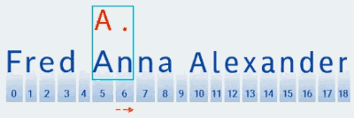
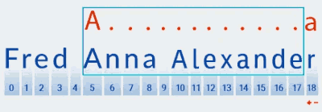
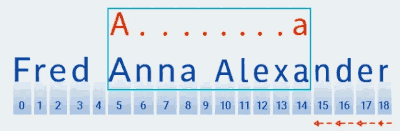
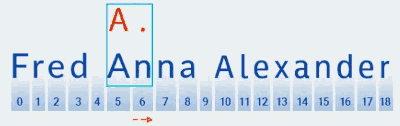
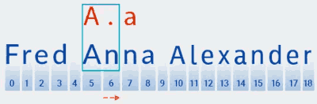

Una expressió regular és un patró per a trobar una cadena en el text. A Java, la representació original d'aquest patró és sempre una cadena, és a dir, un objecte de la String. Ha de complir una sèrie de regles per a ser una expressió regular vàlida. S'escriuen amb lletres i números, així com amb metacaràcters, que són caràcters que tenen un significat especial en la sintaxi de les expressions regulars. Per exemple:
String regex = "java"; // el model és "java";
String regex = "\\d{3}"; // el model es tres dígits;
La creació d'una expressió regular a Java implica dos passos simples:
- escriga-ho com una cadena que complisca amb la sintaxi d'expressions regulars;
- compilar la cadena en una expressió regular;
Primer es crea un objecte patró (Pattern) mitjançant el mètode .compile(cadena).
La sintaxi de les expressions regulars es basa en els caràcters <([{\^-=$!|]})?*+.>, que es poden combinar amb lletres. Depenent de la seua funció, es poden dividir en diversos grups:
1. Metacaràcters per a fer coincidir els límits de línies o text
Metacaràcter Descripció
^ principi d'una línia
ps final d'una línia
\b límit de paraules
\B límit de no paraula
\A començament de l'entrada
\GRAMO final del partit anterior
\Z final de l'entrada
\z final de l'entrada
2. Metacaràcters per a aparellar classes de caràcters predefinides
Metacaràcter Descripció
\d dígit
\D sense dígits
\s caràcter d'espaci en blanc
\S caràcter sense espaci en blanc
\w caràcter alfanuméric o guió baix
\W qualsevol caràcter excepte lletres, números i guions baixos
. qualsevol caràcter
3. Metacaràcters per a aparellar caràcters de control
Metacarácter Descripción
\t caràcter de tabulació
\norte caràcter de nova línia
\r retorno de carro
\F caràcter de avance de línia
\u0085 caràcter de la següent línia
\u2028 separador de línia
\u2029 separador de paràgraf
4. Metacaràcteres para classes de caràcters
Metacaràcter Descripció
[a B C] qualsevol dels caràcters enumerats (a, b o c)
[^ abc] qualsevol caràcter diferent dels enumerats (no a, b, o c)
[a-zA-Z] rangs combinats (caràcters llatins de la a a la z, sense distinció entre majúscules i minúscules)
[anuncio[mp]] unió de caràcters (de la a a la d y de la m a la p)
[az&&[def]] intersecció de caràcters (d, e, f)
[az&&[^bc]] resta de caràcters (a, dz)
5. Metacaracteres per a indicar el nombre de caràcters (quantificadors). Un quantificador sempre va precedit d'un caràcter o grup de caràcters.
Metacaràcter Descripció
? un o cap
* zero o més vegades
+ una o més vegades
{n} n vegades
{n,} n o més vegades
{n m} almenys n vegades i no més de m vegades
Quantificadors cobejosos
Busquen la coincidència més llarga de la cadena. Per defecte els quantificadors són cobejosos.
public static void main(String[] args) {
String text = "Fred Anna Alexander";
Pattern pattern = Pattern.compile("A.+a");
Matcher matcher = pattern.matcher(text);
while (matcher.find()) {
System.out.println(text.substring(matcher.start(), matcher.end()));
}
}
Obtenim l'eixida: Anna Alexa
Per a l'expressió regular " A.+a", la coincidència de patrons es realitza de la manera següent:
- El primer caràcter del patró especificat és la lletra llatina A. Matcher ho compara amb cada caràcter del text, començant des de l'índex zero. El caràcter F està en l'índex zero en el nostre text, per la qual cosa Matcher itera a través dels caràcters fins que coincidisca amb el patró. En el nostre exemple, aquest caràcter es troba en l'índex 5.

- Una vegada que es troba una coincidència amb el primer caràcter del patró, Matcher busca una coincidència amb el seu segon caràcter. En el nostre cas, és el caràcter "." , que representa qualsevol caràcter.

El caràcter n està en la sisena posició. Certament qualifica com una coincidència per a "qualsevol caràcter". - Matcher procedeix a comprovar el següent caràcter del patró. En el nostre patró, s'inclou en el quantificador que s'aplica al caràcter anterior: " .+". Pel fet que el nombre de repeticions de "qualsevol caràcter" en el nostre patró és una o més vegades, Matcher agafa repetidament el següent caràcter de la cadena i el compara amb el patró sempre que coincidisca amb "qualsevol caràcter". En nostre
- Matcher procede a comprobar el siguiente carácter del patrón. En nuestro patrón, se incluye en el cuantificador que se aplica al carácter anterior: " .+". Debido a que el número de repeticiones de "cualquier carácter" en nuestro patrón es una o más veces, Matcher toma repetidamente el siguiente carácter de la cadena y lo compara con el patrón siempre que coincida con "cualquier carácter". En el nostre exemple, fins al final de la cadena (de l'índex 7 a l'índex 18).

Bàsicament, Matcher engul la cadena fins al final; això és precisament el que significa "cobejós". - Després que Matcher arriba al final del text i finalitza la verificació de la part "A.+" del patró, comença a verificar la resta del patró: "a". No hi ha més text avançant, per la qual cosa la verificació continua "retrocedint", començant des de l'últim caràcter:
 - Matcher "recorda" el nombre de repeticions en la part ".+" del patró. En aquest punt, redueix el nombre de repeticions en una i compara el patró més gran amb el text fins que troba una coincidència:

Quantificadors possessius
Un quantificador es converteix en possessiu agregant un caràcter "+" després del quantificador.
"A.+a" // cobejós
"A.++a" // possessius
S'assemblen molt als cobejosos. La diferència és que quan el text s'ha capturat fins al final de la cadena, no hi ha coincidència de patrons mentre es "retrocedeix". En altres paraules, les primeres tres etapes són les mateixes que per als quantificadors cobejosos. Després de capturar tota la cadena, el comparador agrega la resta del patró al que està considerant i el compara amb la cadena capturada. En el nostre exemple, usant l'expressió regular "A.++a", el mètode principal no troba cap coincidència.

Quantificadors poc inclinats
Un quantificador es converteix en poc inclinat agregant un caràcter "?" després del quantificador.
"A.+a" // cobejós
"A.+?a" // poc inclinats
1. Per a aquests quantificadors, igual que amb la varietat cobejosa, el codi busca una coincidència basada en el primer caràcter del patró:

2. Després busca una coincidència amb el següent caràcter del patró (qualsevol caràcter):

3. A diferència de la coincidència de patrons cobejosos, la coincidència més curta es busca en la coincidència de patrons poc inclinada. Això significa que després de trobar una coincidència amb el segon caràcter del patró (un punt, que correspon al caràcter en la posició 6 del text), Matcher comprova si el text coincideix amb la resta del patró: el caràcter " a"

4. El text no coincideix amb el patró (és a dir, conté el caràcter " n" en l'índex 7), per la qual cosa Matcher agrega més un "qualsevol caràcter", perquè el quantificador indica un o més. Després torna a comparar el patró amb el text en les posicions 5 a 8:

En el nostre cas, es troba una coincidència, però encara no hem arribat al final del text. Per tant, la coincidència de patrons es reinicia des de la posició 9, és a dir, es busca el primer caràcter del patró usant un algorisme similar i això es repeteix fins al final del text.

En conseqüència, el mètode main obté el següent resultat quan usa el patró " A.+?a": Anna Alexa Com pot veure en el nostre exemple, diferents tipus de quantificadors produeixen resultats diferents per al mateix patró. Així que tingues això en compte i tria la varietat adequada segons el que estigues buscant.
import java.util.regex.Matcher;
import java.util.regex.Pattern;
public class ExpresionRegularJava {
public static void main(String[] args) {
// Definir el patró de l'expressió regular
String patron = "\\b\\d{3}\\b";
// Crear l'objecte Pattern
Pattern pattern = Pattern.compile(patron);
// Definir la cadena de text en la qual buscar
String texto = "123 456 789";
// Crear l'objecte Matcher
Matcher matcher = pattern.matcher(texto);
// Realitzar la cerca i trobar coincidències
while (matcher.find()) {
String coincidencia = matcher.group();
System.out.println("Coincidencia encontrada: " + coincidencia);
}
}
}
En aquest exemple, l'expressió regular "\b\d{3}\b" busca seqüències de tres dígits completes en una cadena de text. El metacaràcter "\b" representa un límit de paraula, la qual cosa assegura que només es consideren seqüències de tres dígits completes i no parts de seqüències més llargues. El metacaracter "\d" representa qualsevol dígit del 0 al 9, i "{3}" indica que ha d'haver-hi exactament tres dígits en la seqüència.
La cadena de text en aquest cas és "123 456 789". En executar el codi, es trobaran tres coincidències de tres dígits: "123", "456" i "789". Cada coincidència s'imprimirà en l'eixida.
https://regex101.com/ --> validar expressions regulars